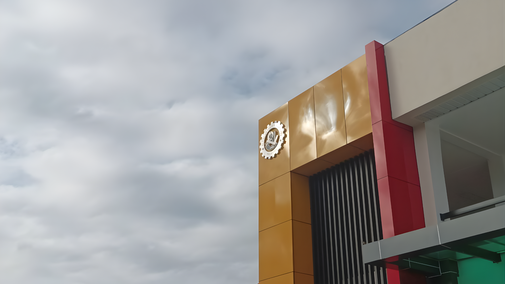
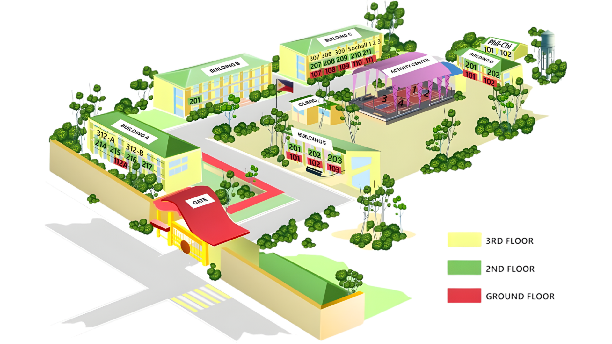

Empowering the BulSU Sarmiento community through a modernized, transparent, and connected lost-and-found experience.
B.A.L.I.K. (BulSU Sarmiento Automated Lost Item Keeper) is a campus-based digital lost-and-found system developed to improve transparency, efficiency, and accountability in managing lost belongings within Bulacan State University - Sarmiento Campus.
Losing something important can be stressful. Traditional lost-and-found processes are often manual, slow, and confusing. B.A.L.I.K. changes that by digitizing the entire turnover process.
B.A.L.I.K. provides a real-time digital log, allowing owners to see exactly what has been recovered.
The system automates the search and matching process, significantly reducing the time it takes to return items.
Every action is recorded, creating a verifiable trail that reduces the risk of unauthorized claims.

AccessibilityStudents can report or search for items from anywhere on the BulSU Sarmiento Campus.
To bridge the gap between lost and found. We aim to provide the Bulacan State University community with a seamless, transparent, and automated platform that ensures lost belongings find their way back to their rightful owners as quickly as possible.
We envision a campus culture where honesty is supported by technology. By automating the "Lost and Found" process, we hope to foster a more organized, honest, and connected university environment.
Bulacan State University - Sarmiento Campus
